Latar Belakang Petani
Mayoritas murid SLB Negeri Sambirejo Nganjuk berasal dari keluarga petani.
GTK Transformatif · Guru SLB
Pembelajaran melalui pengalaman nyata untuk menumbuhkan karakter, keterampilan, dan kemandirian murid.
“Saya menanam. Saya merawat. Saya memanen. Saya mengolah. Saya menghasilkan.”
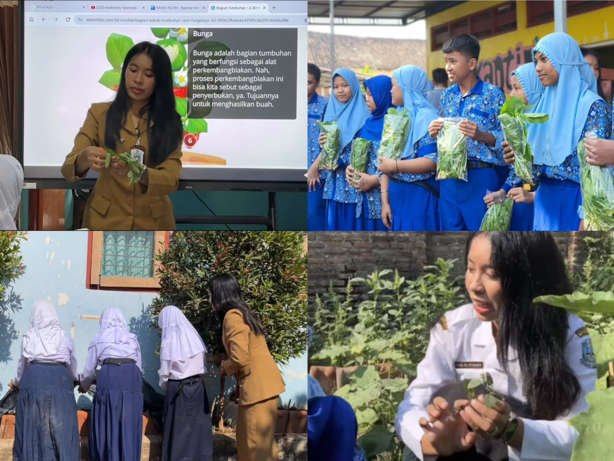
Inovasi yang lahir dari potensi lingkungan dan kebutuhan nyata murid.
Mayoritas murid berasal dari keluarga petani di SLB Negeri Sambirejo Nganjuk.
📊 Klik untuk lihat data ↗Lahan pertanian di Nganjuk bekerja di sektor padi, sayuran, dan jagung dari total luas wilayah 122.433 hektare.
📰 Klik untuk info lengkap ↗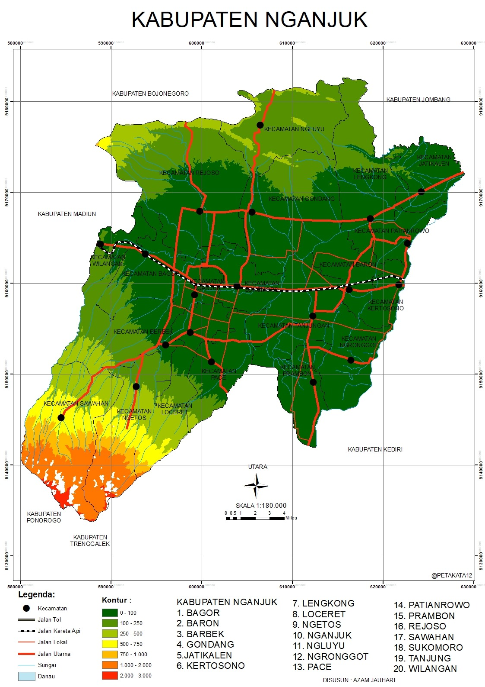
Kabupaten Nganjuk terletak di Provinsi Jawa Timur dengan luas wilayah 122.433 hektare. Wilayahnya mencakup 20 kecamatan, termasuk Kecamatan Sambirejo tempat SLB Negeri Sambirejo berada.
Mayoritas lahan di Nganjuk dimanfaatkan untuk sektor pertanian seperti padi, sayuran, dan jagung — menjadi potensi yang dimanfaatkan AGRO SAKA sebagai laboratorium pembelajaran murid.
Lahan sekolah dimanfaatkan sebagai laboratorium pertanian dan peternakan.
Mengintegrasikan kegiatan kokurikuler, pembelajaran intrakurikuler, dan keterampilan pilihan.
Melalui pembiasaan positif setiap pagi, menumbuhkan sikap disiplin, tanggung jawab, dan kemandirian.
Berawal dari potensi lingkungan dan kebutuhan belajar murid yang beragam.
Mayoritas murid SLB Negeri Sambirejo Nganjuk berasal dari keluarga petani.
Karakteristik dan kebutuhan belajar beragam: hambatan pendengaran, intelektual, fisik, autisme, dan ADHD.
Pembelajaran terlalu berfokus pada buku teks dan minim interaksi dua arah.
Murid sebagai calon petani generasi Alpha yang siap menghadapi masa depan.
Pelaksanaan inovasi berangkat dari kebutuhan dan kondisi nyata di lingkungan sekolah.
Sekolah belum memiliki lahan sendiri untuk kegiatan pertanian.
Murid hambatan pendengaran membutuhkan cara belajar visual, konkret, dan kontekstual.
Merawat tanaman dan ternak memerlukan disiplin dan tanggung jawab.
Menyediakan media informasi sederhana untuk mengatasi masalah nyata di lahan.
Menghubungkan pertanian dan peternakan dengan berbagai mata pelajaran dan keterampilan.
Aksi nyata AGRO SAKA dimulai dari penataan laboratorium dan pemahaman kebutuhan murid.
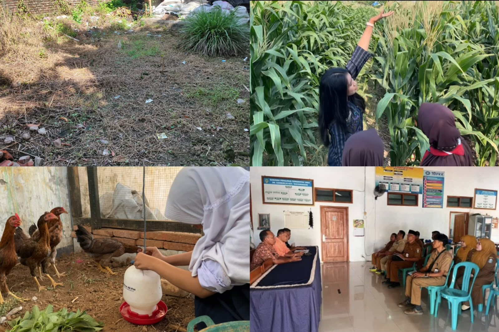
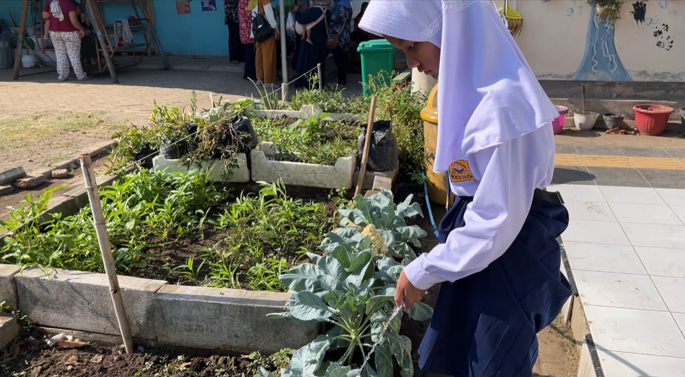
Hambatan Pendengaran Total. Mampu membaca kalimat, ulet.
Latar belakang: Anak petani musiman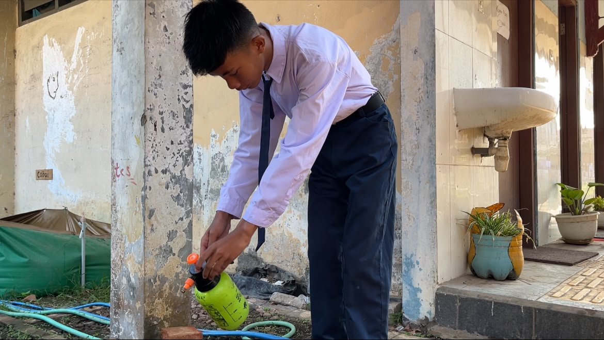
Usia termuda. Masih memiliki sisa pendengaran, mampu menangkap informasi lebih cepat.
Latar belakang: Anak buruh tani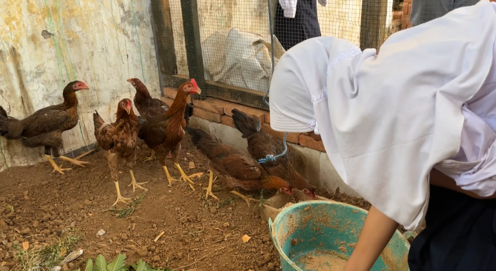
Hambatan Pendengaran Total. Tinggal di lingkungan dekat persawahan, biasa berinteraksi dengan petani yang mampir di warung keluarganya.
Latar belakang: Lingkungan persawahan
Hambatan Pendengaran Total. Kemampuan kognitif setara anak kelas II SD reguler, motorik baik dan gemar menari.
Latar belakang: Ayahnya petaniMembaca artikel tentang pemeliharaan tanaman dan hewan ternak.
Mencari media pembelajaran yang dapat diterapkan melalui IFP/PID.
Mempelajari perkembangan kurikulum dan program Kemendikdasmen melalui Ruang GTK.

Pembiasaan positif melalui kegiatan pembenihan, perawatan, mengamati, hingga memanen.
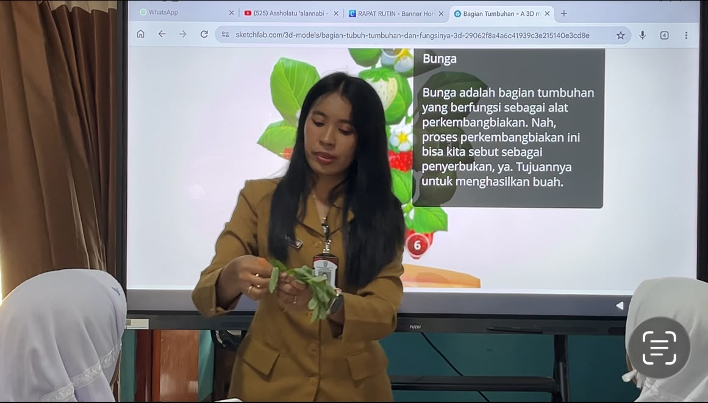
Mengintegrasikan tema pertanian dalam mata pelajaran dengan media tanaman, lahan sekolah dan sekitar, serta bantuan teknologi PID.

Murid mengolah hasil panen melalui keterampilan vokasi tata boga dan praktik jual beli di kantin.
Menyiram depan kelas dan selatan kelas Bu Erica.
Menyiram belakang kelas Bu Erica dan sawah simulasi.
Bertugas di sektor peternakan ayam.
Bertugas di sektor peternakan lele.
Pembiasaan setiap pagi · instruksi bertahap · bantuan dikurangi sesuai perkembangan.
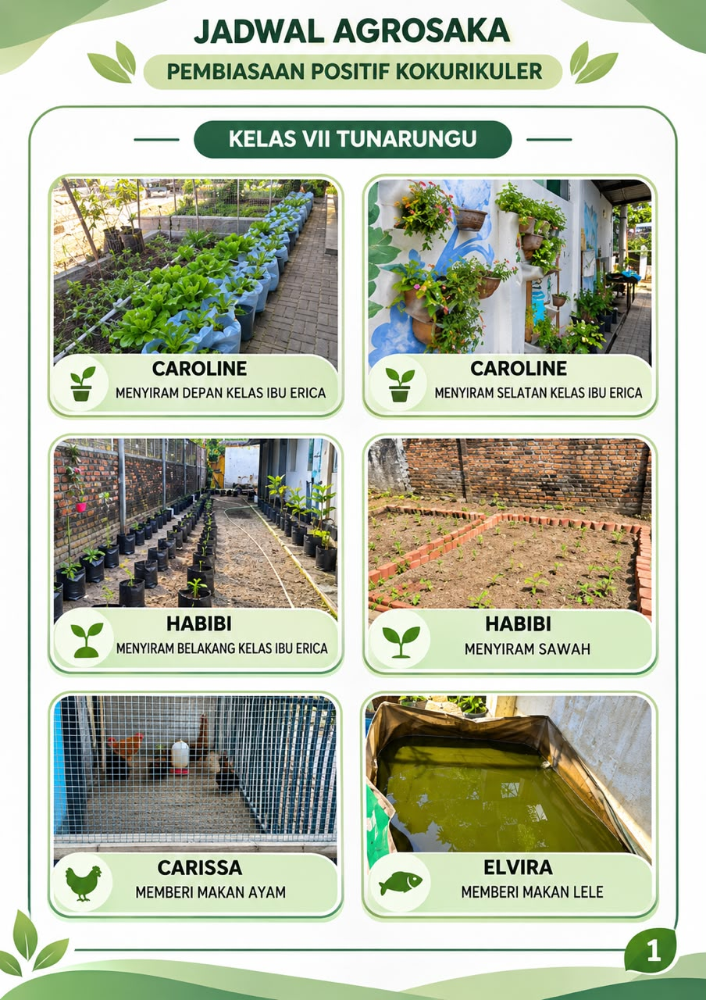
Jadwal pembiasaan positif kelas VII Tunarungu — visual dan kontekstual untuk mendukung kebutuhan belajar murid.
Peningkatan kemampuan literasi dan numerasi setiap murid melalui kegiatan AGRO SAKA.
Terjadi peningkatan rentang 5–10 poin pada penilaian literasi untuk indikator yang berbeda setiap murid.
Terjadi peningkatan rentang 5–10 poin pada penilaian numerasi untuk indikator yang berbeda setiap murid.
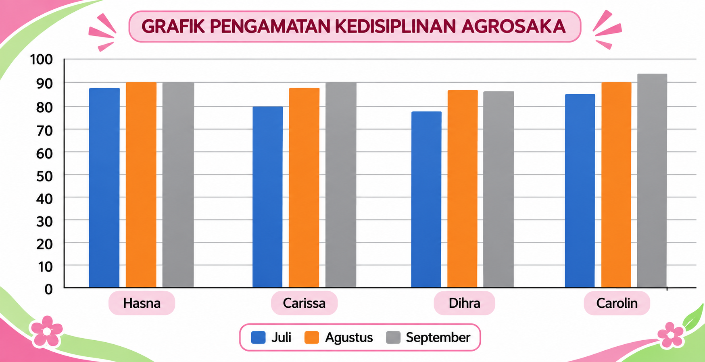
Pengamatan kedisiplinan murid pada bulan Juli, Agustus, dan September — terjadi peningkatan setiap bulan.
Perubahan yang diamati melalui keterlibatan murid dalam kegiatan pembelajaran.
Sikap tanggung jawab, disiplin, dan kemampuan mengambil keputusan.
Suasana hati murid meningkat — diawali kegiatan Earthing dan Grounding.
Mengenal dan memecahkan masalah dengan bantuan Google Lens.
Peningkatan hasil belajar terhadap konsep pembelajaran melalui pengalaman nyata.
Peningkatan keterampilan mengolah hasil panen menjadi produk bernilai guna dan jual.
Tumbuhnya komitmen, kerja sama, dan kemandirian melalui pembagian tugas dan kegiatan tata boga.
Kolaborasi dan penerapan AGRO SAKA dengan teman sejawat.
Apa kata murid, kepala sekolah, orang tua, dan rekan sejawat tentang inovasi ini.
Saya senang belajar bertani bersama Ibu Erica. Terima kasih Ibu Erica.
Inovasi ini adalah inovasi nyata dari program kokurikuler sekolah “One Garden Many Skills”. Murid belajar bertani, terampil, dan berkarakter baik.
Saya berterima kasih karena Caroline diajarkan bertani hingga ternak hewan. Caroline sekarang bisa mandiri.
Kegiatan ini menginspirasi kami sebagai guru untuk mencoba menerapkan hal yang sama di kelas masing-masing, disesuaikan dengan kebutuhan murid.
“Perubahan tidak selalu membutuhkan fasilitas yang besar. Perubahan dapat dimulai dari apa yang kita miliki.”
📸 Klik foto mitra untuk informasi lebih lengkap
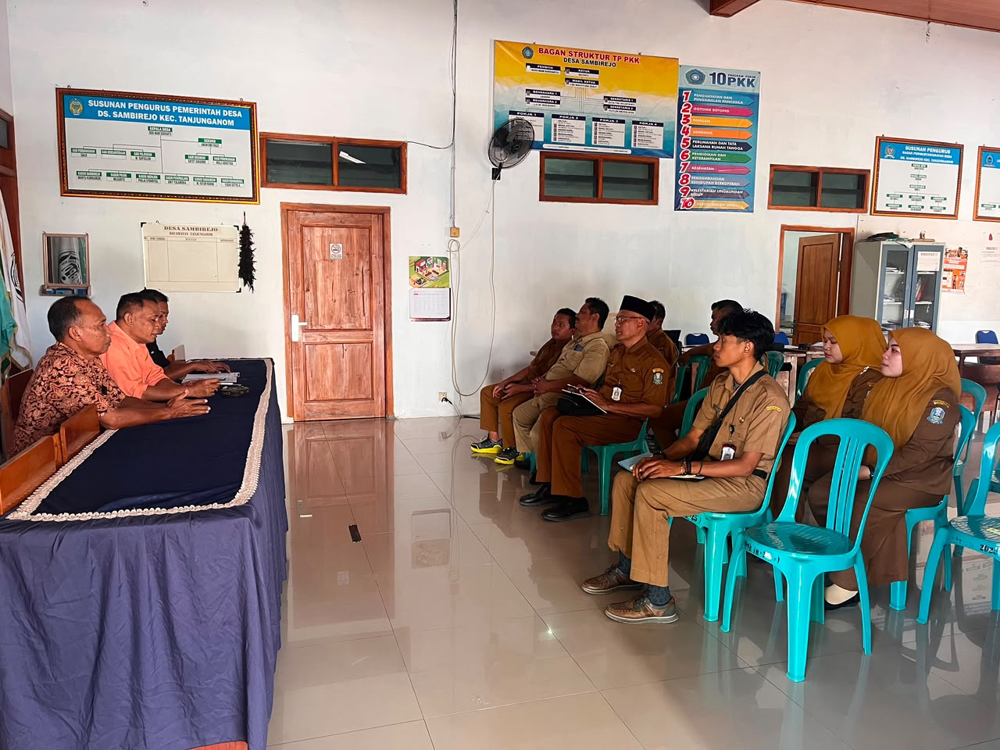
Peminjaman lahan kosong untuk laboratorium AGRO SAKA.
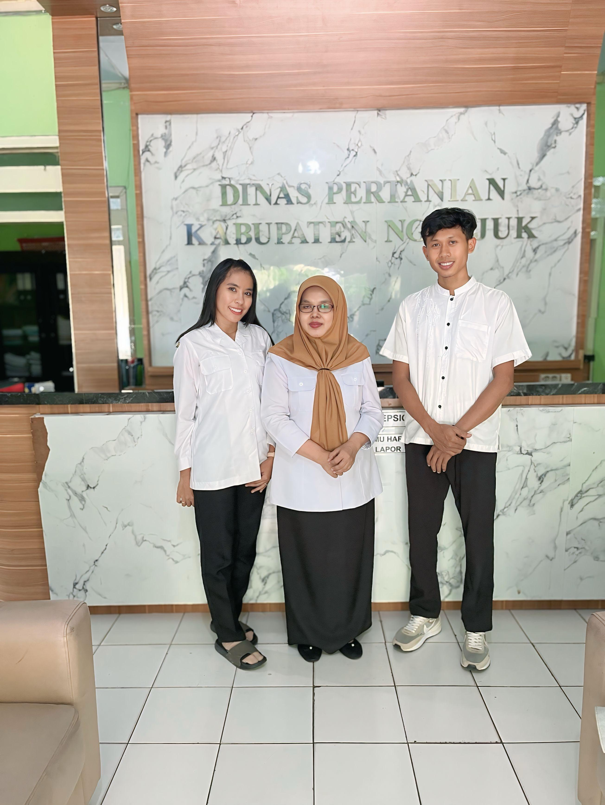
Dukungan teknis pertanian dan peternakan.
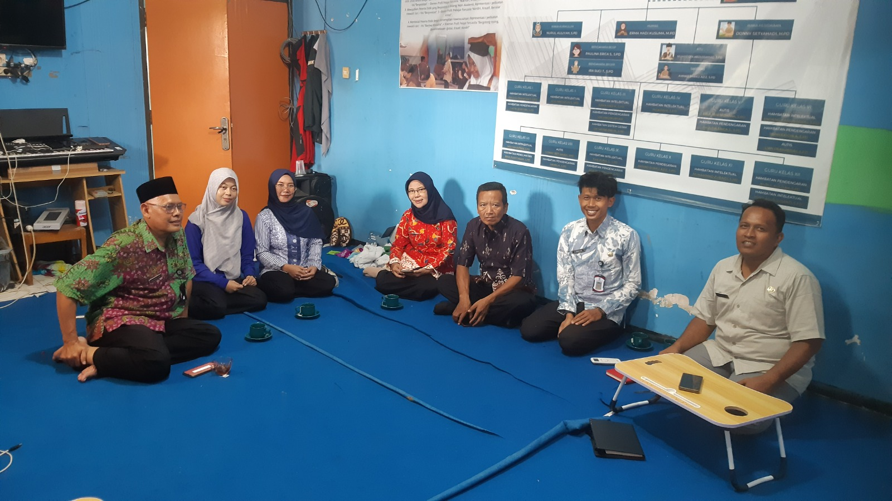
Kerja sama pemanfaatan lahan untuk kegiatan murid.
Hasil dari kegiatan menanam, merawat, dan mengolah oleh murid.
📸 Klik setiap gambar untuk informasi lebih lengkap
Hasil panen kegiatan pertanian murid.
Produk dari budidaya jamur di laboratorium.
Ayam dan lele hasil dari sektor peternakan.
Dokumentasi perjalanan kegiatan AGRO SAKA di lingkungan pembelajaran.
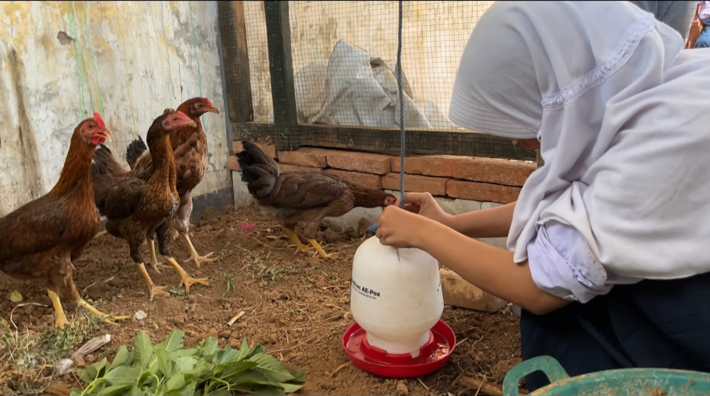
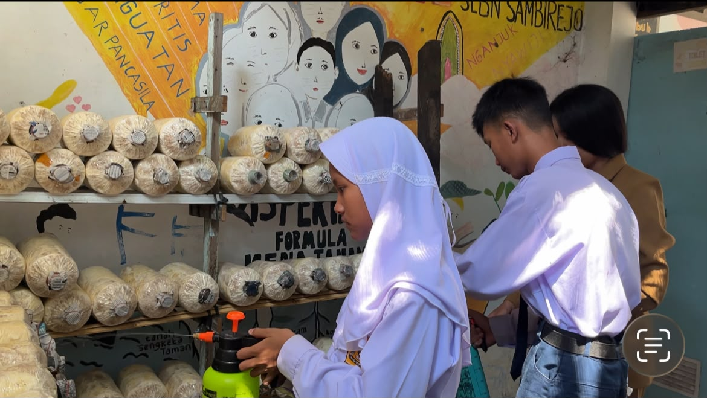
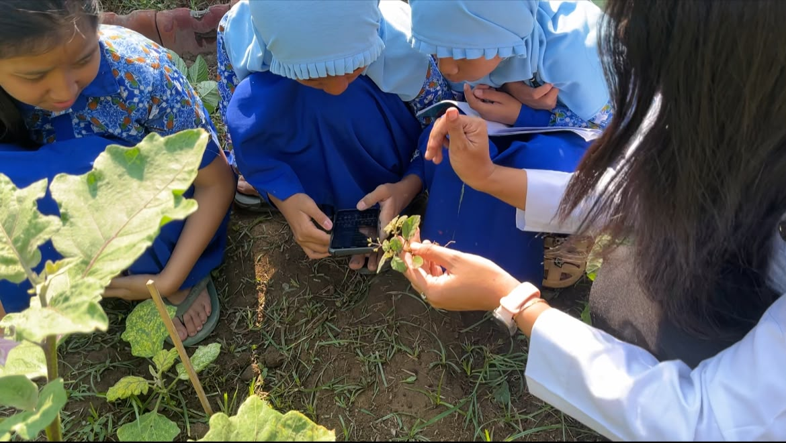
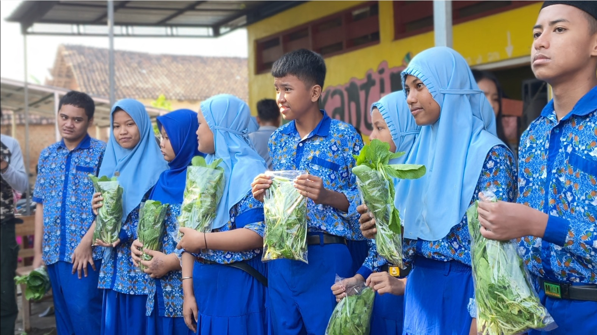
Saksikan video dan baca naskah untuk mengenal lebih dekat inovasi AGRO SAKA.
Saksikan dokumentasi perjalanan, aktivitas, dan pelaksanaan inovasi pembelajaran AGRO SAKA.
Akses naskah yang memuat penjelasan mengenai gagasan, proses, dan pelaksanaan inovasi AGRO SAKA.
Sosok di balik gagasan dan pelaksanaan inovasi pembelajaran AGRO SAKA.
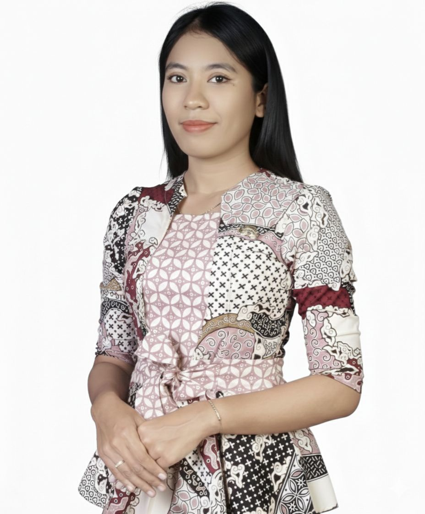
🌻 Pengembang AGRO SAKASLB Negeri Sambirejo Nganjuk
📍 Jawa Timur, Indonesia
Pengembang inovasi AGRO SAKA (Agro Sarana Aktivitas Karya Anak), sebuah pendekatan pembelajaran yang memanfaatkan aktivitas pertanian dan peternakan sebagai sarana pengalaman belajar murid.
AGRO SAKA · Agro Sarana Aktivitas Karya Anak
Kembali ke Beranda ↑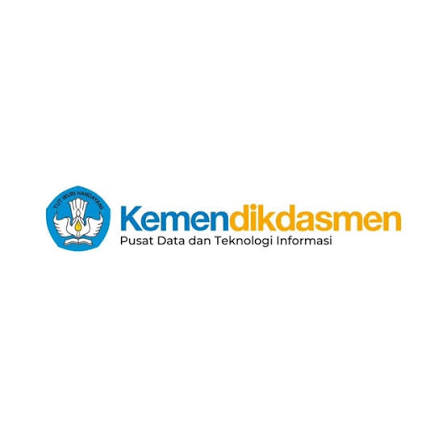
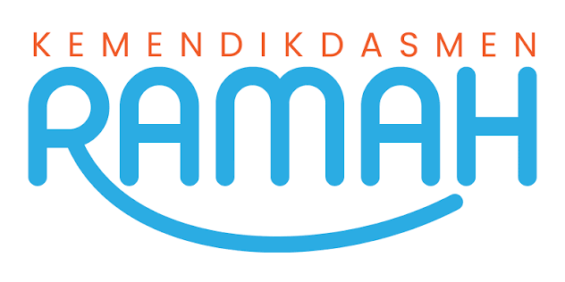
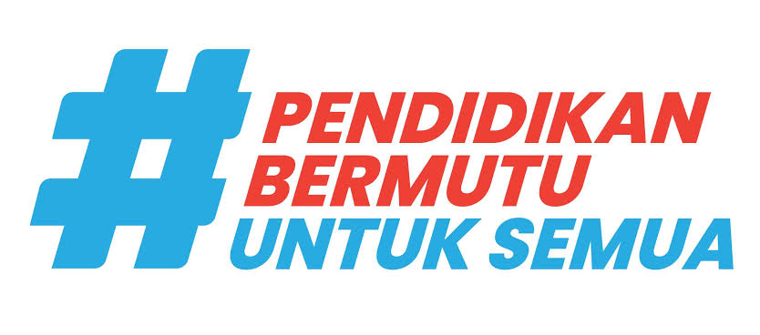